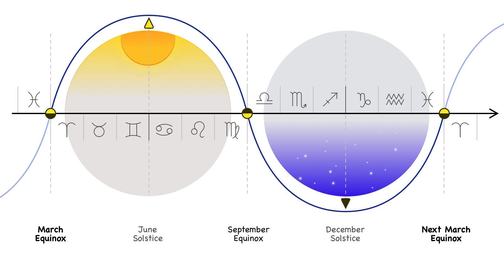

Metronomes in Human Experience
What defines the present moment & characterises our passage through it? Not the ticking of the clock surely. But in a world defined by constant change how does any creature great or small differentiate one moment from the next, seperating out parcels from undifferentiated duration.
Metronomes help. The beat of a drum, the beat of my heart, the great throw of the ocean on the shore. The day, rolling across us again & again.
What are our most familiar metronomes & how do they situate us?
The Year
Top notes: spring flowers & breeding, autumn leaves
Heart notes: summer sun, winter snow
Bass notes: the steady motion of the stars, the equinoxes
An age unto itself! No doubt the longest time that many animals learn to experience. And perhaps a late arriveal to evolutionary history, the tear grows louder as we climb ashore & start to brave the North & South. A late arrival to human history as well, our begginnings in the tropics no doubt sheltered us from its worst extremes. Outside the tropics the year reinforces the lessons of the day: binary states, temperature extremes, oscillating back & forth. And the two halves of the year characterized by one kind of change or another– waxing & waning of seasons. The our corners of the year & the four seasons are no anthropomorphic imposition– they are placed at the two extremes, the solstices & at the two moments of fastest change, the equinoxes.

But this is everywhere apparent– because if humans had invented the year, how did nature learn to dress itself in such different fashions? Not by copying our flamboyant displays I’m sure.
Top notes: lunar flowers, lunar insects, lunar corals
Heart notes: the visual spectacle, braving the day & disrupting night
Base notes: the great blanket of the ocean rising & falling in a double lockstep with little luna
The year has a quiet little cousin, Luna. It bridges the great expanse between year & day. Despite being gentler in its influence it mimics the four states, bright & dark, waxing & waning. It fits twelve times in the year & thereby teaches us a great & elegant number. And there are three fours in twelve! What signifance has that, do you suppose?
The pasasage of the moon is quite subtle, but despite its lack of fire we feel its influence upon us, warping & dividing the day into tides, bringing light into the night– a divine & mysterious imposition! And the keen & sensitive eye will see its followers everywhere about– in poor moon-addled moths or menstrual cycles.
And then comes the day. Ah the day! It is impossible to imagine a more perfect span of time. Enough to dream & dance & eat & talk & dream again! What a difference a day makes. In a day you can plan a whole adventure, a feast, a ball– & carry it out as well, bring it all to fruition, gather friends & family & strangers for some great undertaking, some great experience! And then– perhaps by luna’s light– to bed to dream & ready yourself for another. And another & another! Thirty times, almost, until the moon shows the same face– many hundreds– who really knows how many– many hundreds of days until the same flowers will return, the same birds will tell you– & then again & again & again & again, by their hundreds & their thousands they march by. Uncountably many, an inconcievable array, & each one perfect & complete, bracketed vby night, lit by the one true God, that unfailing fire-bringer, life-bringer, feeder of plants of warmer of skin & breath!
What a thing is a day. What a marvellous thing.
And it to has its waxing & its waning, dusk & dawn– those still incomparable beauties, those beauties that define beauty, against which all beauty tries & fails.
Top notes: all life, responsive & reactive & aware
Heart notes: the sun the clouds the sky
Bass notes: circadian rhythms, the deep subconscious pulse
What else on that scale? What other rhythms direct us? The stars precede over thousands of years, a slow drift that modulates the sky. The wandering stars & comets go their way. Meteorites periodically light up the sky & earthquakes & hurricanes come & disturb our days from time to time.
But nothing has the beat of those three. They divide up our long durations & determine all our festivals & all the narrative waypoints of life.
The next steady beat is in some way quieter & much more personal than those. It is the heartbeat.
Dimly overheard but everpresent. Everpresent. That most marvellous muscle sends pressure waves out to your furthest extremeties. Your body doesn’t so much as ‘know’ the heartbeat– it is the foundation of all things. New oxygen comes with a rhythm. Your muscles incorporate it into every deed. Your brain swells & shrinks in your skull– do you feel your thoughts quicken & slow with a rhythm? Perhaps?
The heartbeat is no ‘universal’– as if anything is– but considering your little universe it nearly is. Do your thoughts race in time with your heart? Does the world not speed up & race ahead of you when you relax & let it slow?
Top notes: the electric tingle in all your cells, mere existence
Heart notes: the drum of your emotional world, your excitement, your fatigue– manifest!
Bass notes: time itself
The heartbeat defines the pace of time for everything that has it. Could the day be like a heartbeat for a plant? Such speculations are beyond us for now. But pulse-driven creatures like ourselves– you can tell to look at them, if you tried to guess. Pick your nearest animal, look deep in its eyes, look at its gestures & motions & suppose to yourself what its heartbeat might be, what pace it sees the world at. I guarantee you wot be far off.
There are other bodily rhythms. The stages of development of a body, the menstrual cycle, the period of generations. There are characteristic speeds of twitching, there are brain waves. There is breathing! There is pacing & running! (Breathing– a strange cycle. So forceful on its own & yet nearly within our control! That relationship is a novel to itself.) But this is not a catalogue. I have my players, three big, one small. There are many bit-parts & side characters in this drama– what is the world but a whorl within a whorl, a set of stacked cycles reaching from mere matter out to heaven?
There. We have time. Time enough. We feel ourselves driven onwards by these tiny parcels, normally just at the dge of hearing but rising up in times of drama to a hammering. We wake & see the world, & are reminded in the course of the day of the passage of the month & the year. And if we think of summers or of springs– we can count them somehow, & we are told there are so-and-so many, no more, no less. Or rather less as the case may be but certainly no more.
Is that not enough? Do we lack somehow for stepping stones on our journey from place to place & to the grave? It can be, it really can & often is. But we miss the should & we are curious creatures & life will insist on presenting us with mysteries & puzzles. Why 4 seasons, not three? Why 12 months, not 9 or 15? Nature makes work for idle hands & after the age of agriculture began & slaves & beurocracy began their millenia of toil idle hands had time to work.
Our metronomes teach us about numbers. Day & night, sun & moon, self & other. Splitting collections– four seasons, four phases of the moon. It is no step at all from there to fractions. Ten fingers to count with so count everything by tens. But why 12? It is a mystery & nature will leave them everywhere. It divides into three & four– two good, honest numbers, numbers even birds can see. Is that explanation enough? Is there something sacred about the act of multiplication itself perhaps? Two by two by three– that is, two sixes, is also twelve.
\(6\cdot10\cdot6\cdot10\cdot2\cdot12\)
\(2\cdot3\cdot2\cdot5\cdot2\cdot3\cdot2\cdot5\cdot2\cdot2\cdot2\cdot3\)
\(2^7\cdot3^3\cdot5^2\)
I don’t now how the scaffolding came about. With twelve echoing in their heads they split the day & night into twelve pieces each. When they noticed those twelve pieces, divided again by twelve & once again. No. I have lost my faith.
Believing that the second is a mechanical mirror of the heartbeat I hoped to understand how they factored the day. But \(4\cdot12^4\) would have our seconds at 0.96 as long as they are– isn’t that just as good, & more beautiful?
Did they really fall in love with 60 first? 60 of all the numbers, 6x101? Is history so contingent, so littered with the artefacts of ancient compromises that we are left with \(2^7\cdot3^3\cdot5^2\) heartbeats in a day, a system imposed almost universally?
[In quickscript: And history is slow & indolent & sticky.]
Well. The best laid plans of. I had hoped at this point in the essay to have understood in a flash of brilliance how the beating of the heart had been built into the foundation of all our everyday activities. But after all the Herz is not the unit of the heart– that’s just a visual pun, another silly accident built into all our endeavours. It is named after a man, a family name.
In any case it is near enough & perhaps there are worse compromises to suffer. The ticking of the clock, that mechanical convenience used to regulate experience, beats with the rhythm of a heart– not the heart mind you, for there is no such thing– but a heart, a common human heart, a heart at rest & at ease with the world, a heart under no duress, no exceptional sickness or stress. A common heart, a heart that most everyone has had for moments, for a beat or two between the quickenings & slowings of our ever-changing duration.
And no doubt it is for the best & might even give us hope that we resist the urge to throw away the oddities we carry with us. Some little quirks of ages past embedded in our lives. The inexplicable way some ancient scribes collected sacred numbers out of nature & assembled them into a scaffolding out of which to build an artific of shared duration.
Our letters carry marks of many minds. Why not our moments too?
Footnotes
Or 5x12– then you can count by twelve on one hand, & five on the other. Nevertheless.↩︎